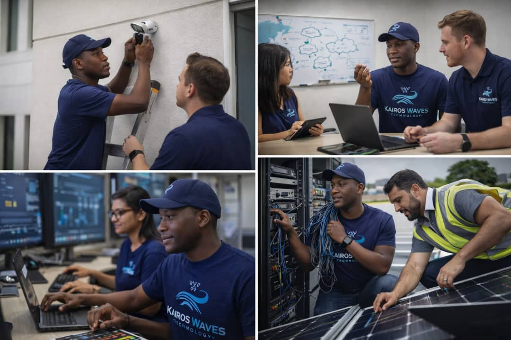

Ongom Ronald
About Me

My name is Ongom Ronald from Lira City, Northern Uganda. I am an aspiring software engineer with a passion for building efficient, accessible, and dynamic web applications using modern web technologies.
Career & Interests

I am focused on software engineering, system troubleshooting, and full-stack web development. I enjoy solving real-world problems using HTML, CSS, JavaScript, and networking fundamentals.